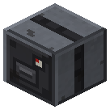
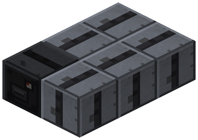
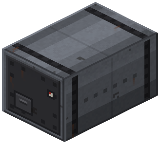
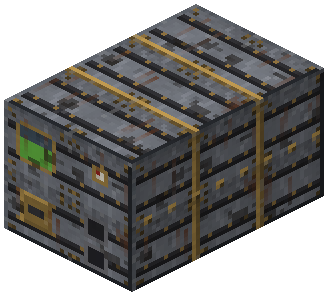

Chemical Reactor
Era 2Steam and mechanics

idle

running
Nitrocellulose, cordite (acetone partly returned), wood chemistry, biogas, acids and petrochemistry; the high-pressure reactor does the same ×3 plus synthesis.
Parameters
| Era | 2 — Steam and mechanics |
|---|---|
| Multiblock | no |
| Drive | steam |
| Tanks, mB | 16000, 16000, 16000, 16000 |
| What it does | 50 recipes: two fluids -> fluid/item; dissolving, formalin, phenol, petrochemistry, cordite (acetone partly returned), biogas from sawdust/biomass (small) |
| Input energy | steam |
Numbers
| chemical reactor: lime milk per 1000 wood vinegar -> calcium acetate, no steam | 250 mB |
|---|---|
| chemical reactor: acetone per cordite batch | 250 mB |
| chemical reactor: acetone returned per cordite batch | 150 mB |
| chemical reactor: smokeless powder from 4 nitrocellulose | 5 pcs |
| chemical reactor: biogas per 1 sawdust (was 250) | 10 mB |
| chemical reactor: biogas per 1000 mB of Forestry biomass | 50 mB |
Fed by
- IC2:itemHarz ← High-Pressure Reactor
- dustCopper ← High-Pressure Reactor
- Ammonium Nitrate ← High-Pressure Reactor
- Calcium Acetate ← High-Pressure Reactor
- Chalk ← High-Pressure Reactor, Stamp Mill
- Naphthalene ← Atmospheric Column (Shukhov Furnace)
- Nitrocellulose ← High-Pressure Reactor
- Rosin ← High-Pressure Reactor
- Acetone ← High-Pressure Reactor
- Aluminum Sulfate Solution ← High-Pressure Reactor
- Ammonia ← High-Pressure Reactor
- Aqua Regia ← Mixer
- bioethanol ← Evaporator
- creosote ← Coke Oven Chamber, Wood Distillation Retort
- Formaldehyde (Formalin) ← High-Pressure Reactor
- fuel ← High-Pressure Reactor
- Hydrogen ← High-Pressure Reactor
- Lye ← Leach Vat
- Methanol (Wood Alcohol) ← High-Pressure Reactor
- Mixed Acid ← Mixer
- Petroleum Gas ← Oil Well
- Nitric Acid ← High-Pressure Reactor, Brick Retort
- Nitrogen ← Linde Air Separation Plant, High-Pressure Reactor
- Phenol (Carbolic Acid) ← High-Pressure Reactor
- Pyroligneous Acid ← Wood Distillation Retort
- steam ← Reactor Steam Generator
- Sulfuric Acid ← Contact Apparatus, Lead Chamber
- syngas ← High-Pressure Reactor
- Toluene ← High-Pressure Reactor
- Turpentine ← High-Pressure Reactor
- Uranyl Nitrate Solution ← High-Pressure Reactor
- Uranyl Sulfate Solution ← High-Pressure Reactor
- water ← Artesian Well
Feeds
- IC2:itemHarz → Steam Autoclave, High-Pressure Reactor
- dustCopper → Electrolytic Cell, Crucible Furnace, High-Pressure Reactor
- dustSaltpeter → Lead Chamber, Brick Retort
- dustSulfur → Electrolytic Cell, Steam Autoclave, Design Bureau, Contact Apparatus, Lead Chamber
- Alumina (Aluminum Oxide) → Electrolytic Cell
- Ammonium Nitrate → High-Pressure Reactor
- Calcium Acetate → High-Pressure Reactor, Brick Retort
- Chalk → High-Pressure Reactor
- Nitrocellulose → High-Pressure Reactor
- Smokeless Powder → Cartridge Press
- Rosin → High-Pressure Reactor
- Yellowcake (Ammonium Diuranate) → High-Pressure Reactor
- Acetone → High-Pressure Reactor
- Aluminum Sulfate Solution → High-Pressure Reactor
- Ammonia → High-Pressure Reactor
- Formaldehyde (Formalin) → Steam Autoclave, High-Pressure Reactor
- fuel → High-Pressure Reactor
- Hydrogen → High-Pressure Reactor
- Methanol (Wood Alcohol) → High-Pressure Reactor, Mixer
- Nitrogen → High-Pressure Reactor
- Phenol (Carbolic Acid) → Steam Autoclave, High-Pressure Reactor
- syngas → High-Pressure Reactor
- Toluene → High-Pressure Reactor
- Turpentine → Steam Autoclave, High-Pressure Reactor
- Uranyl Sulfate Solution → High-Pressure Reactor
Assembly
Without the vessel the controller stands. Assembled, it runs up to 4 recipes at once: steam and output xN, same time.
The controller — the chemical reactor: place it facing you. It is the bottom-left block of the end.

Bottom row of shells: 1 to the right and 3 deep (5 blocks).

Top row — 6 more shells. The 2x2x3 vessel is done: the end comes alive. Pipes and hoppers go to the ends; sides and roof are blind.

assembled

running
Faded blocks were placed in earlier steps.